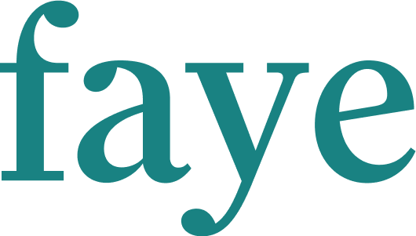
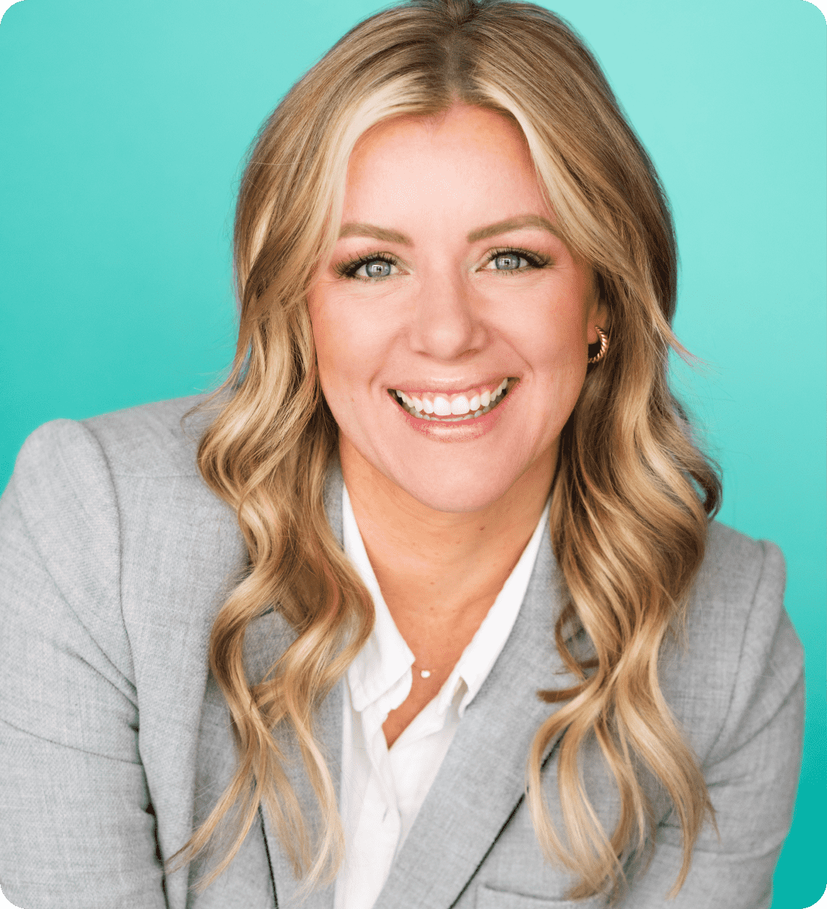

Utah has the capital and the founders. What it lacks is the infrastructure that connects them.
There are almost 130,000 women-founded startups in Utah and multiple groups who are organizing to help women succeed as founders. It is time to activate women as investors and connect companies ready to grow with capital to help them succeed. Silver & Salt Capital helps women invest in women.
Utah's startup ecosystem is world-class. But look at who's participating in startups, on either side of the table, and a clear pattern of discounting women emerges.
Today women are sitting on the sidelines and building in isolation. There is a myth in Utah that women are not interested in investing or leading high-growth startups. The truth is much more promising: Women are building companies and women have capital to invest.
Utah has 129,429 women-owned businesses. This means that women own 44.5% of the state's small-businesses, up from 31% in 2020. The founders are here.
And yet almost none of the Utah venture capital reached female founders. The gap is access, in part because women build different kinds of businesses and because almost all the startup investors have been men.
There are an estimated 90,000 accredited women investors between the Wasatch Front and Park City corridor. We have one of the wealthiest stretches of high net worth households in the Mountain West.
Women in Utah need a trusted community where women learn together, evaluate deals together, and invest with confidence.
National data is clear that women founders are a better startup bet. They return more money, boast better performance, and use resources better.
Utah has evidence of a double-sided ecosystem waiting to ignite in recent data. Below are three examples of startups founded by women seeking venture growth opportunities. In addition, the region has thousands of untapped potential investors.

Faye pairs busy households with a dedicated Family Advisor who takes on the invisible work: travel and event planning, home services, vendor management, the endless decisions. Emily King co-founded it in Utah and raised a pre-seed round in 2025.

Proximity gives candidates and elected officials the tools to reach voters, organize their teams, and run modern campaigns. A public benefit corporation, it was built by Becki Wright after she lost a city council race by eleven votes.
Rasa turns the slow, expensive work of clearing a criminal record into a fast, affordable process. A former public defender who led Utah's clean slate law, Noella Sudbury has helped thousands of people understand and clear their records.
The money to fund Utah's women founders already exists within the state. Add up the accredited women, market by market, and it only takes a fraction of eligible women to move their investment capital and dramatically shift the startup ecosystem.
Available capital can emerge in multiple forms. Most women are already investing in the stock market or retirement accounts, and money can also be allocated from Donor Advised Funds.
Silver & Salt Capital helps accredited women investors move funds to support local startups. That capital is already at work, held in accounts women can lift and shift toward local, private investments in women-led companies.
In 2025, the total amount invested in Utah startups was a staggering $1.86B and only $9.75M was publicly invested in women founders.
The fastest way to improve the founder ecosystem for women is through investment.
We aim to invest an additional $1M into the market allocated for startups with women founders.
Engaging more women in investing could unlock trillions in new capital and increase global wealth.
Jacki Zehner, SheMoney
Read on SheMoney ↗Silver & Salt Capital seeks founding members who are ready to participate in Utah as investors, connectors, and champions.